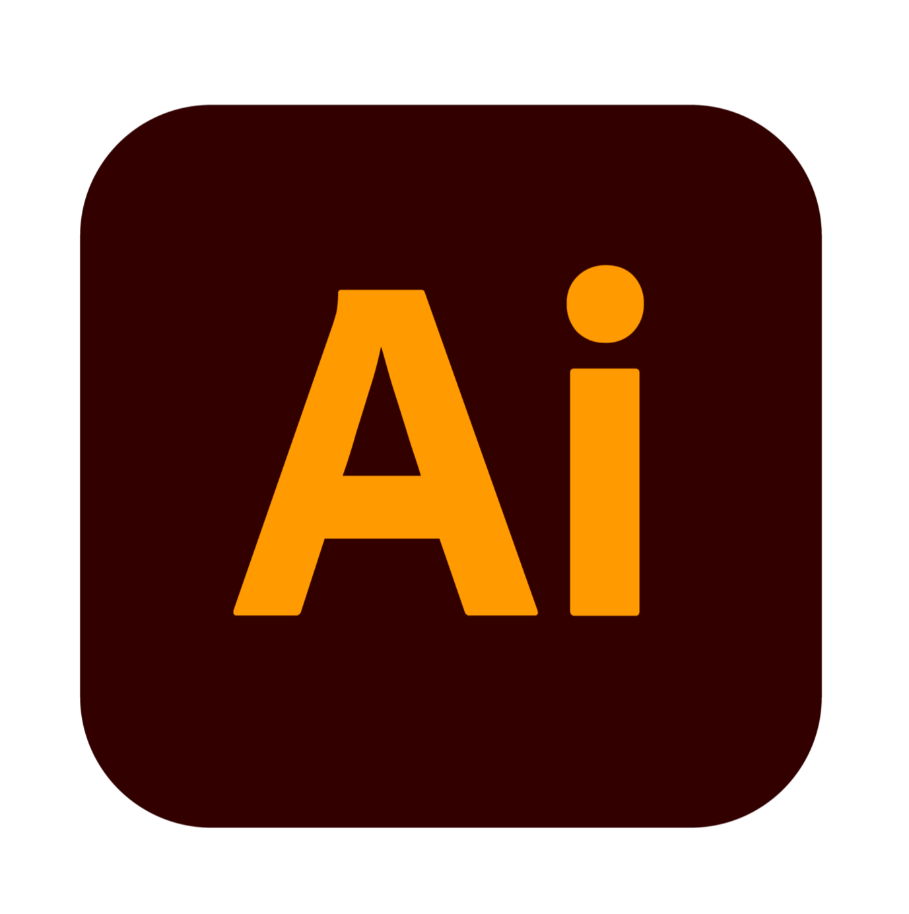
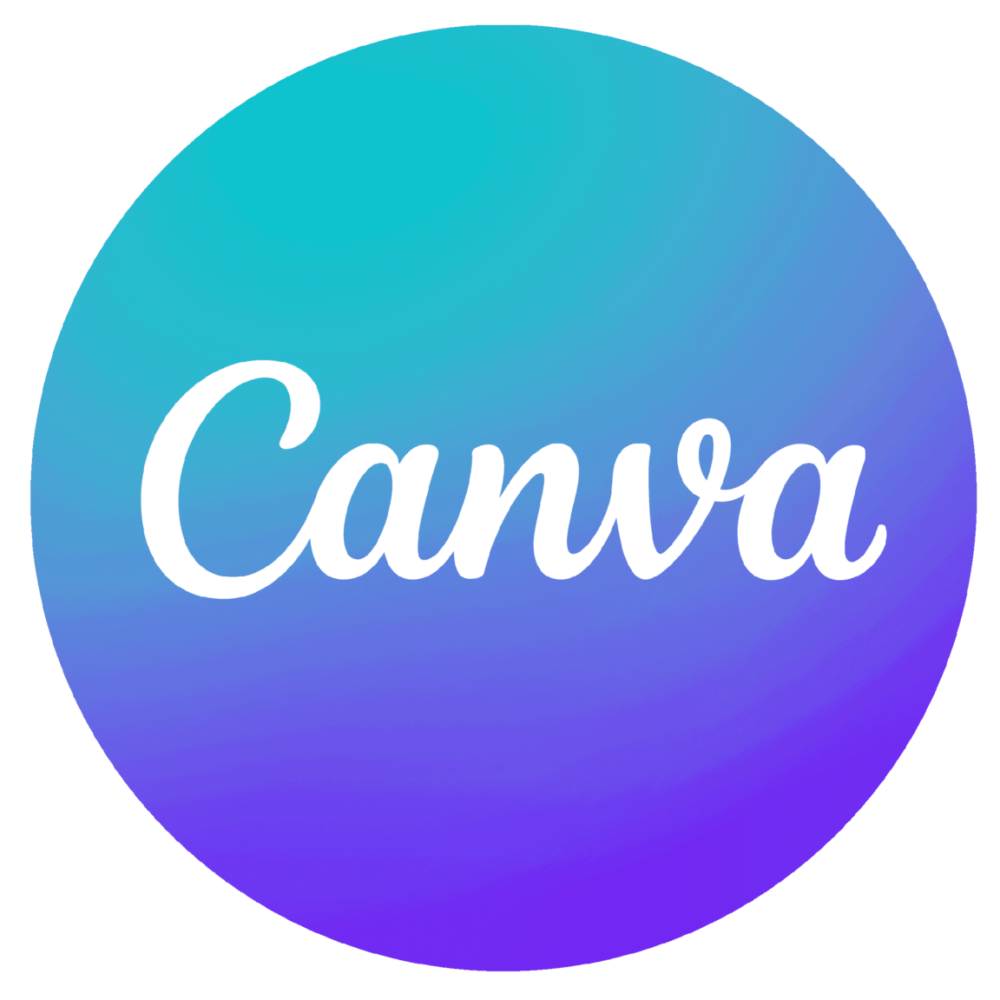
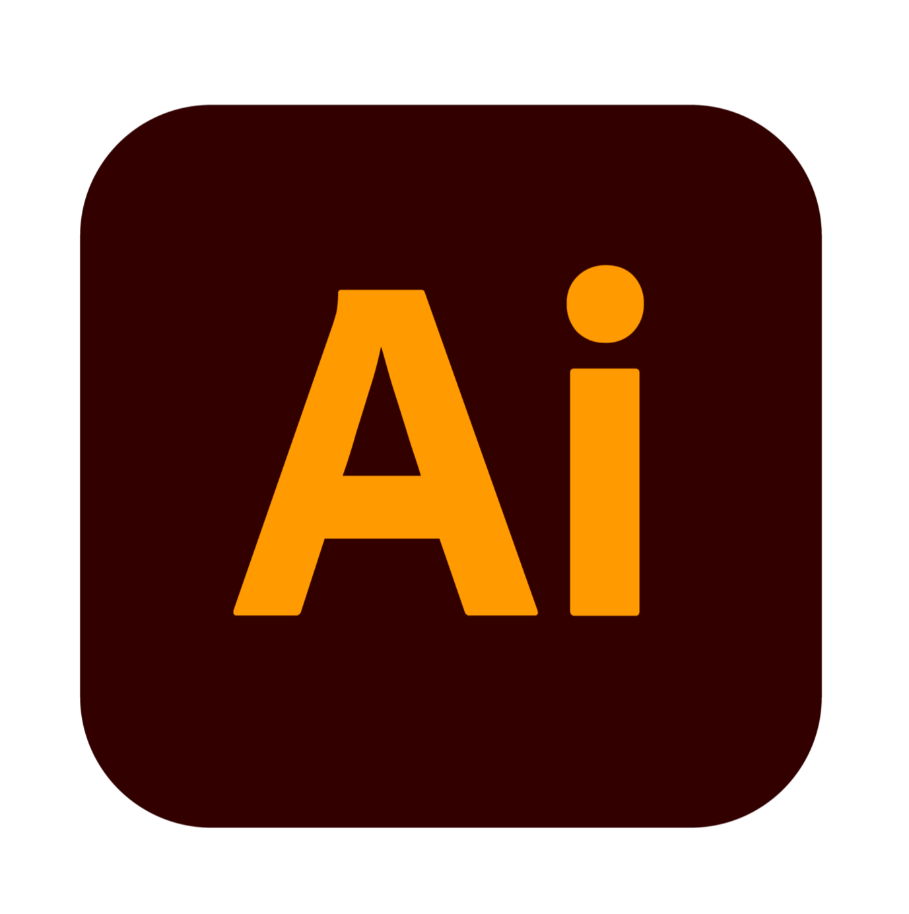
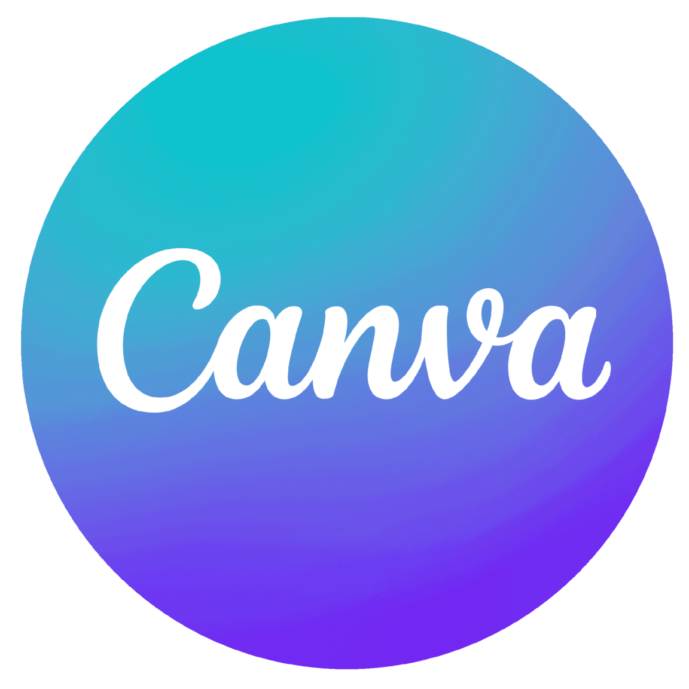

Portafolio
Diseño
Combino creatividad y funcionalidad para desarrollar diseños atractivos e innovadores, adaptados a las necesidades de cada proyecto.
🔹Diseño y Desarrollo Web:
Experiencia creando interfaces intuitivas y atractivas con un enfoque en la experiencia del usuario.
🔹 Identidad Visual y Branding
Especializada en la creación de identidades visuales impactantes, desde logotipos hasta sistemas gráficos completos.

Modelado 3D
En constante desarrollo en el arte del modelado 3D, utilizando Blender
para crear personajes, entornos y objetos con detalle y precisión. Exploro
técnicas de esculpido, texturizado e iluminación para lograr resultados visuales atractivos y
funcionales.
Comprometida con la mejora continua, busco aplicar mis conocimientos en proyectos creativos y desafiantes
Fotografia
Apasionada por capturar momentos y contar historias a través de la fotografía.
Experiencia en composición, iluminación y edición para crear imágenes impactantes.
Enfoque en fotografía de: retrato, producto, paisajes, animales, etc.
buscando siempre transmitir emociones y mensajes visuales efectivos.


Dibujos
El dibujo es una de mis pasiones y una herramienta clave en mi proceso creativo. Utilizo esta habilidad para generar bocetos rápidos y plasmar ideas visuales durante el desarrollo de proyectos. Como hobby, me permite mantener mi creatividad fluida y, en el ámbito laboral, me ayuda a conceptualizar y visualizar de manera efectiva antes de llevar las ideas al siguiente nivel digital
Ver mas sobre dibujosProgramaciòn
Desarrollo soluciones interactivas y funcionales utilizando C++, Python, HTML, CSS y JavaScript.
Aplico mis conocimientos en desarrollo web y multimedia para crear experiencias visuales optimizadas,
integrando diseño, animación y usabilidad. Además, exploro la programación en C++ y Python para
aplicaciones más avanzadas, ampliando constantemente mis habilidades en el ámbito tecnológico.


 


